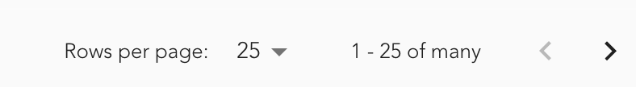

When it comes to server-side pagination getting the count of total pages can be a costly operation if the data set is large. The page count is often calculated by dividing the total number of rows by the page size, meaning the total number of rows must be fetched additionally from the database.
There are a few ways to work around this problem, one of the more lazy solutions that can be implemented in the frontend exclusively is to display some kind of placeholder, e.g. "many".

With MUI X Data Grid we can achieve this by adding two more attributes to the table component:
rowCount={count || Number.MAX_VALUE}In some cases you might want to display the actual count of rows, but only if it is not too large, e.g. if you filter the data set and the returned amount of records is actually relevant. Otherwise we just will use the MAX_VALUE, which leads to following logic:
type LabelDisplayedRowProps = {
from: number
to: number
count: number
}
const labelDisplayedRows = ({ from, to, count }: LabelDisplayedRowProps) => {
return `${from} - ${to} of ${count === Number.MAX_VALUE ? 'many' : count}`
}You can also check the count for a specific value, e.g. 1000 and display many if the count is larger than that. The last part is to add the localeText attribute to the table component:
localeText={{
MuiTablePagination: {
labelDisplayedRows: labelDisplayedRows,
}
}}